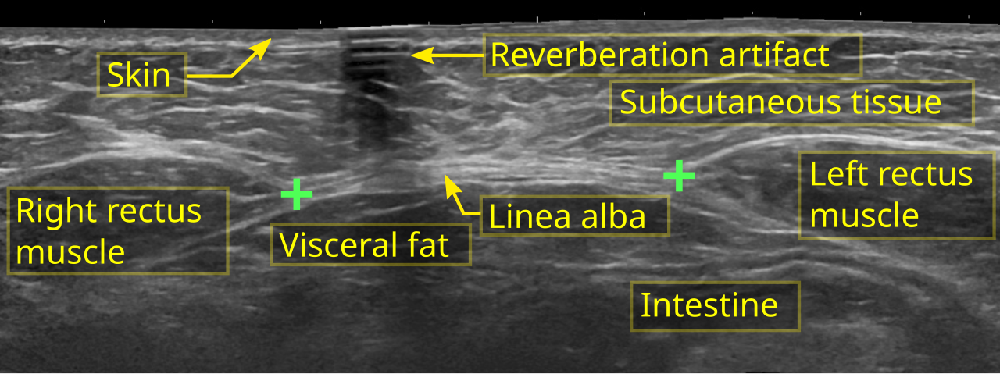

Thời điểm trở lại tập tùy phương pháp sinh, biến chứng và cảm giác hồi phục. Tách cơ bụng có thể thay đổi theo thời gian; độ rộng khoảng cách đơn lẻ không phản ánh toàn bộ chức năng. Sàn chậu cũng cần được xem xét khi tăng tải.
Tình huống minh họa: Đã qua một mốc tuần nhưng bạn vẫn đau hoặc nặng vùng chậu khi tăng tải. Ngày trên lịch không thay cho khả năng thực tế; cần điều chỉnh và đánh giá thay vì ép hoàn thành tiến độ mẫu.
Khoảng cách cơ bụng và chức năng sau sinh không phải một thước đo
Trong thai kỳ, thành bụng và mô liên kết thích nghi với thay đổi kích thước và tải. Sau sinh, cảm giác yếu, khó kiểm soát thân mình hoặc khoảng cách giữa hai bó cơ thẳng bụng có thể khiến nhiều người lo lắng. Tuy nhiên, bề rộng khoảng cách không phản ánh toàn bộ sức mạnh, triệu chứng hay khả năng hoạt động.

Cần xem thêm đau, khả năng tạo lực, phản ứng khi tăng tải và những triệu chứng sàn chậu như rò tiểu hoặc nặng vùng chậu. Một động tác không phù hợp ở thời điểm này không đồng nghĩa bị cấm vĩnh viễn; ngược lại, không đau ở một lần thử cũng không bảo đảm đã sẵn sàng cho mọi cường độ.
Đi bộ và hoạt động nhẹ có thể là điểm khởi đầu khi phù hợp. Sau mổ hoặc biến chứng, hãy hỏi thời điểm trở lại và dấu hiệu cần theo dõi. Chương trình tập bụng nên được điều chỉnh theo khả năng, thay vì hứa đóng khe cơ theo số tuần hay dùng điểm HRV thay cho đánh giá. Việc chăm con, thiếu ngủ và khả năng tiếp cận hỗ trợ cũng là một phần thực tế của phục hồi. 1 3
Sàn chậu cần sức mạnh, thả lỏng và phối hợp
Sàn chậu là một nhóm cơ, không phải một nút bấm đơn lẻ. Nhóm cơ này góp phần nâng đỡ và kiểm soát hoạt động vùng chậu, phối hợp với hô hấp, thành bụng và các hoạt động thường ngày. Chức năng có thể bị ảnh hưởng bởi yếu cơ, căng quá mức, đau hoặc phối hợp chưa phù hợp; những tình trạng này không được xử lý giống nhau.
Vì vậy, “có triệu chứng thì siết nhiều hơn” là cách suy luận dễ sai. Với người cần tăng sức mạnh, chương trình phù hợp chú ý cả chất lượng co và giai đoạn nghỉ. Với người có đau hoặc căng, khả năng thả và cảm giác an toàn có thể cần được giải quyết trước. Một người cũng có thể có nhiều vấn đề cùng lúc.
Khi thử nhận biết cơ, hãy giữ hơi thở tự nhiên và tránh biến động tác thành gồng toàn thân. Đừng dùng việc ngắt dòng tiểu thường xuyên như bài tập. Nếu không chắc đang làm đúng, hoặc triệu chứng tăng sau tập, một đánh giá chuyên môn có thể tiết kiệm thời gian hơn việc tăng tiếp số lần trên app. Tiến bộ nên được đánh giá bằng chức năng và triệu chứng, không chỉ chuỗi ngày hoàn thành.
“Cơ PC”, cơ hành hang và cơ ngồi hang không phải tên của cùng một cơ
Những nội dung Kegel thường dùng tên “PC” cho cả vùng, nhưng cơ mu–cụt là một phần trong nhóm nâng hậu môn. Các cơ nông như cơ hành hang và cơ ngồi hang là những cấu trúc khác, liên quan hoạt động vùng đáy chậu. Có phối hợp giữa nhiều cơ không có nghĩa người dùng cần hoặc có thể cô lập từng cấu trúc hoàn toàn khi tự tập.
Vì vậy, tên giải phẫu giúp định hướng, không thay kiểm tra chức năng. Người có triệu chứng có thể cần đánh giá sức co, khả năng thả, đau và phối hợp. Bài tập không chỉ là làm một “động cơ” lớn hơn: cùng một mức siết có thể phù hợp với người này và làm người khác khó chịu hơn. Đây là lý do bản hướng dẫn nên mô tả mục đích và phản ứng cần theo dõi thay vì chỉ yêu cầu siết tối đa. 4 5 2 3 6
Năng lượng sẵn có: công thức là điểm khởi đầu, không phải chẩn đoán
Năng lượng sẵn có xem xét phần năng lượng còn lại cho hoạt động cơ thể sau chi phí vận động, thường được mô tả theo khối lượng cơ thể không mỡ. Khái niệm này giúp hiểu vì sao một người vẫn ăn đều nhưng chưa đáp ứng được tải tập hoặc nhu cầu sinh học. Cân nặng đơn lẻ cũng không kể hết câu chuyện.
Khó khăn là các thành phần của phép tính đều có sai số: thực phẩm ăn vào, năng lượng vận động và khối lượng không mỡ không được biết chính xác chỉ bằng một ứng dụng. Đồng thuận IOC năm 2023 lưu ý sự khác nhau giữa người và giữa các hệ cơ thể; không nên dùng một ngưỡng duy nhất như ranh giới chẩn đoán REDs.
Ảnh hưởng có thể liên quan sức khỏe xương, sinh sản, chuyển hóa và hiệu suất, nhưng triệu chứng không đặc hiệu. Mất kinh cần được xem xét cùng khả năng mang thai và những nguyên nhân khác, không tự xác nhận REDs. Khi có dấu hiệu đáng lo, mục tiêu là phối hợp đánh giá, dinh dưỡng và thay đổi tải tập. Đạt được một con số calo do đồng hồ đề nghị không bảo đảm mọi chức năng đã hồi phục.
Công thức và điều nó chưa biết về bạn
Khung thường dùng là EA = (năng lượng ăn vào − năng lượng dùng cho vận động) / khối lượng không mỡ, với đơn vị năng lượng theo kg khối lượng không mỡ mỗi ngày. Công thức làm rõ câu hỏi phần năng lượng còn lại phải hỗ trợ các chức năng nào. Nó không biến sai số của ba thành phần thành một kết quả chính xác.
Đặc biệt, mức tiêu hao do đồng hồ ước tính không đồng nhất với toàn bộ thông tin cần trong nghiên cứu năng lượng sẵn có. Ghi ăn và đo thành phần cơ thể cũng có giới hạn. Vì vậy, không nên giải một phép tính từ app rồi dùng một đường ngưỡng để kết luận bị hoặc hết REDs. Diễn biến sức khỏe và đánh giá nhiều mặt vẫn cần thiết. 7 8
Bảng đối chiếu để đọc đúng thông tin
| Vấn đề có thể gặp | Cần đánh giá | Điều dễ hiểu sai |
|---|---|---|
| Yếu hoặc tổn thương cơ | Khả năng co và chức năng | Chỉ đếm số lần siết |
| Căng hoặc đau | Khả năng thả và nguồn đau | Mặc định cần siết mạnh hơn |
| Phối hợp chưa phù hợp | Hô hấp, cơ khác, hoạt động gây triệu chứng | Coi gồng toàn thân là co đúng cơ |
| Rối loạn cương hoặc đau khi quan hệ | Nhiều nguyên nhân cùng có thể góp phần | Coi sàn chậu là nguyên nhân duy nhất |
Ứng dụng thực tế: làm gì và đánh giá bằng cách nào?
Bắt đầu với hoạt động nhẹ, nghỉ đủ và tăng từng bước khi thấy thoải mái. Sau mổ lấy thai hoặc biến chứng, hỏi thời điểm phù hợp. Nhờ đánh giá nếu có rò tiểu, nặng vùng chậu hoặc đau trong các động tác.
- Ghi điều ảnh hưởng cuộc sống. Thời điểm, đau, chảy máu, giấc ngủ hoặc mức khó chịu cụ thể giúp làm rõ câu hỏi.
- Ghi những thay đổi liên quan. Thuốc, tránh thai, lịch sống, khả năng mang thai và giai đoạn sau sinh có thể đổi cách diễn giải.
- Chọn hỗ trợ theo mục tiêu. Có thai, tránh thai, giảm đau và điều chỉnh tập là những mục tiêu khác nhau; không dùng một biểu đồ thay cho mọi quyết định.
- Chuẩn bị trao đổi khi cần. Mang diễn biến và điều đã thử, hỏi rõ lựa chọn cùng kế hoạch theo dõi thay vì tự mua một bộ xét nghiệm hoặc phác đồ bổ sung.
Khi nào nên tìm hỗ trợ?
Mốc sáu tuần không tự là giấy phép chạy nhảy hay tập nặng. Không hứa một bài tập đóng hoàn toàn khe cơ bụng hoặc phục hồi theo số ngày cố định.
Chảy máu tăng, đau vết mổ, sốt hoặc triệu chứng sàn chậu tăng cần trao đổi với đội ngũ chăm sóc trước khi tăng tập.
Nguồn tham khảo và phạm vi hỗ trợ
-
ACOG — Exercise After Pregnancy — Professional patient guidance. Hỗ trợ: Trở lại vận động sau sinh tùy phương pháp sinh và biến chứng.
-
NHS — Urinary incontinence: non-surgical treatment — Public health guidance. Hỗ trợ: Đánh giá sàn chậu và tập có giám sát cho rò tiểu.
-
Cambridge University Hospitals — Female pelvic floor muscle exercises — Physiotherapy patient guidance. Hỗ trợ: Cần thả lỏng đầy đủ giữa các lần co cơ.
-
North Tees and Hartlepool NHS — Pelvic Floor Exercises for Men — Physiotherapy patient guidance. Hỗ trợ: Nhận biết, co và thả lỏng cơ sàn chậu nam.
-
Royal Berkshire NHS (2024) — Pelvic floor strengthening and relaxation exercises for men — Physiotherapy patient guidance. Hỗ trợ: Phối hợp tăng sức mạnh và thả lỏng; không kê bài siết cho tất cả.
-
Cohen et al. (2016) — The Role of Pelvic Floor Muscles in Male Sexual Dysfunction and Pelvic Pain — Clinical review. Hỗ trợ: Quan hệ giải phẫu, chức năng sàn chậu và tiếp cận sinh học–tâm lý–xã hội.
-
Mountjoy et al. (2023) — IOC consensus statement on Relative Energy Deficiency in Sport (REDs) — Consensus statement. Hỗ trợ: Thiếu năng lượng, xương, kinh nguyệt và đánh giá đa chuyên ngành.
-
NHS — Missed or late periods — Public health guidance. Hỗ trợ: Nguyên nhân trễ kinh và thời điểm đi khám.
Cập nhật nội dung và nguồn: 26/10/2026. Nội dung giáo dục; chưa có xác nhận duyệt bởi bác sĩ.